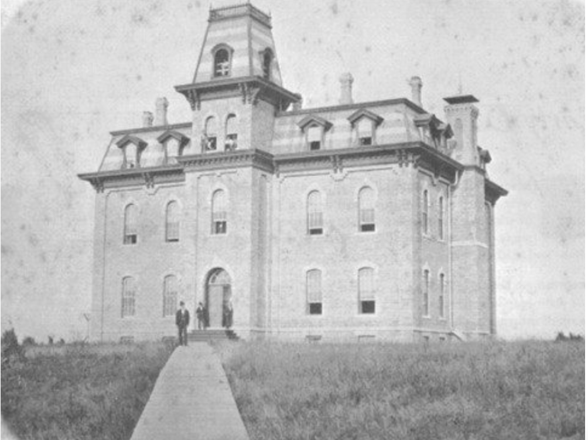
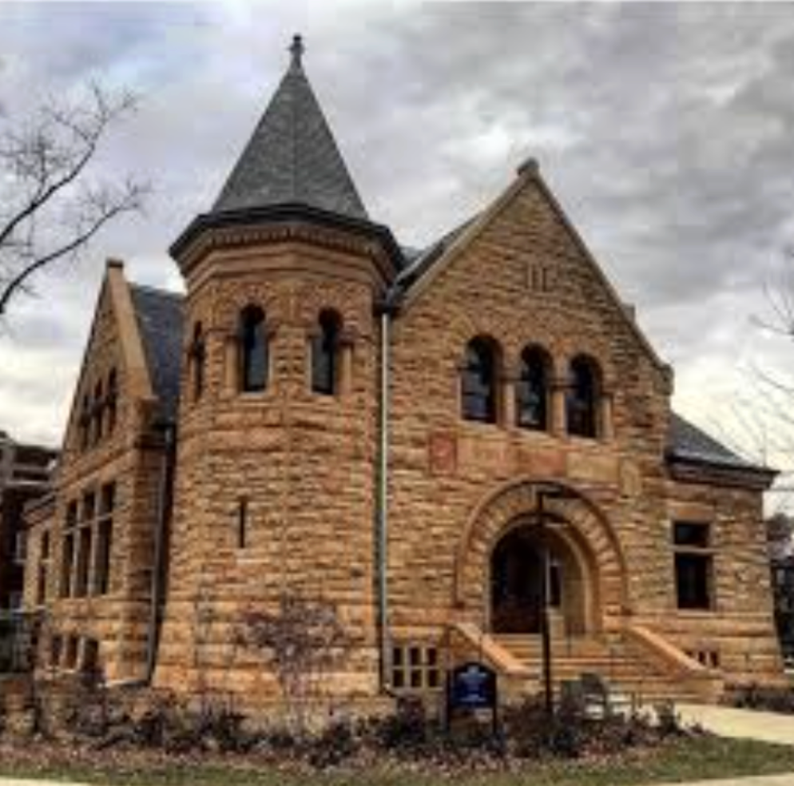

Williis Hall was built from 1868 up until 1872 by architect firm Alden and Howe. It is Carleton’s longest running building, and has held many different hats. It was once a chapel, once a library, once a dormitory, and now is utilized for classrooms and offices. The Willis limestone is a signature of Second Empire Style, which was used primarily for French Buildings. If you go to Paris, you will see limestone buildings that look quite similar. This hall belongs to the “Early Buildings” era.

← Back to Map